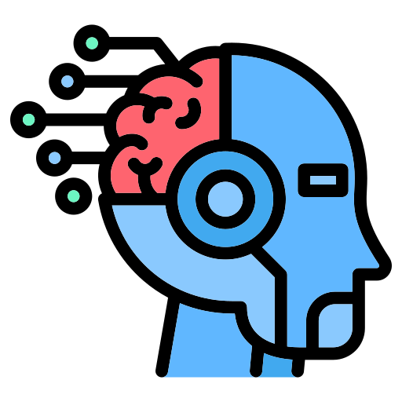
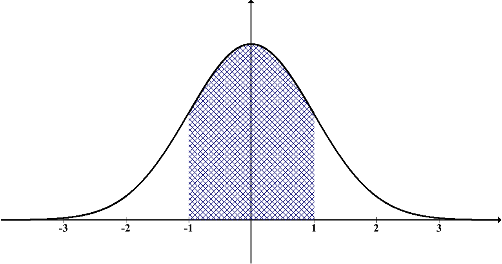

Uvod u AI i LLM-ove u praksi
Matija Pavlović
7. svibnja 2025.
Plan radionice
- Uvod u AI i LLM-ove
- Kako radi neuronska mreža
- Osnove obrade jezika (NLP)
- Što je LLM i kako ga koristiti
- Promptanje u praksi
- LLM-ovi u svakodnevnom radu
- Pitanja i odgovori
Što je AI?
- AI (umjetna inteligencija) podrazumijeva stvaranje sustava koji mogu obavljati zadatke koji zahtijevaju ljudsku inteligenciju.
- Počeci AI-a datiraju iz 1950-ih godina.
- Alan Turing postavlja temelj s pitanjem: "Mogu li strojevi misliti?"
- AI se razvija kroz uspone i padove – "AI zime" zbog prevelikih očekivanja.
Prvi pristupi u AI
- Logički pristupi – korištenje formalnih pravila i logike za donošenje zaključaka (npr. prediktivni modeli temeljeni na logici).
- Bayesovski pristup – korištenje Bayesove teoreme za donošenje odluka u uvjetima nesigurnosti (npr. Bayesovski klasifikatori).
- Simbolička AI – zasnovana na manipulaciji simbolima i pravilima (npr. sistem za rješavanje problema temeljen na pravilima).
Prvi pristupi u AI
- Pretraga prostora stanja – tehnike za pronalaženje rješenja putem pretrage (npr. algoritmi za pretragu poput A* ili minimax).
- Ekspertni sustavi – sustavi temeljeni na pravilima koji simuliraju odluke stručnjaka u određenom području (npr. MYCIN za medicinske dijagnoze).


Kako smo došli do LLM-ova
- AI → ML → DL → NLP → LLM
Kako mislimo da AI radi
Kako AI zapravo radi

Kako radi neuronska mreža
- Neuroni, slojevi, veze
- Proces učenja – prilagodba težina
- Vizualna intuicija, bez matematičke dubine
3. Obrada jezika i dolazak LLM-ova
- Tokenizacija i vektori
- Klasični NLP → duboko učenje
- Transformer arhitektura
4. Što je LLM i kako ga koristiti
- Predviđanje riječi u kontekstu
- Demo primjene: sažeci, pitanja, kod
- Snaga i ograničenja
5. Promptanje u praksi
- Dobar prompt: jasnoća, uloga, primjeri
- Loš vs. dobar prompt – pokazni primjer
- Interakcija s publikom
6. LLM-ovi u svakodnevnom radu
- Automatizacija zadataka
- Korištenje alata: ChatGPT, Copilot, Notion AI
- Odgovorno korištenje i ograničenja